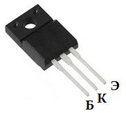

Транзистор 2SD1415A
Транзистор 2SD1415A структуры n-p-n. Корпус: TO-220F.
Обозначение на корпусе транзистора 2SD1415A часто наносится без первой цифры и буквы, т.е. маркируется как D1415A.
Комплементарной парой для 2SD1415A является транзистор 2SB1020A c p-n-p структурой.

Рис. 1 - Цоколевка транзистора 2SD1415A
Таблица 1
| Параметр | Значение |
|---|---|
| Напряжение коллектор-эмиттер, не более | 100 В |
| Напряжение коллектор-база, не более | 120 В |
| Напряжение эмиттер-база, не более | 6 В |
| Ток коллектора, не более | 7 А |
| Рассеиваемая мощность коллектора, не более | 25 Вт |
| Коэффициент усиления транзистора по току (h21э) | 2000...15000 |
Аналоги
Транзистор 2SD1415A можно заменить на
2SC2898, 2SC4242, BD649, BD651, BDT63C, BDT65C, BDT87, BDT87F, BDW43, BDW73D, BDX33D, BDX53D, BDX53E, BDX53F, MJE15028, MJE15028G, MJE15030, MJE15030G, MJE15032, MJE15032G, MJE15034, MJE15034G, MJE5740, MJE5741, MJE5742, MJF15030, MJF15030G, TIP150, TIP151, TIP152, TIP160, TIP161, TIP162, TTD1415B